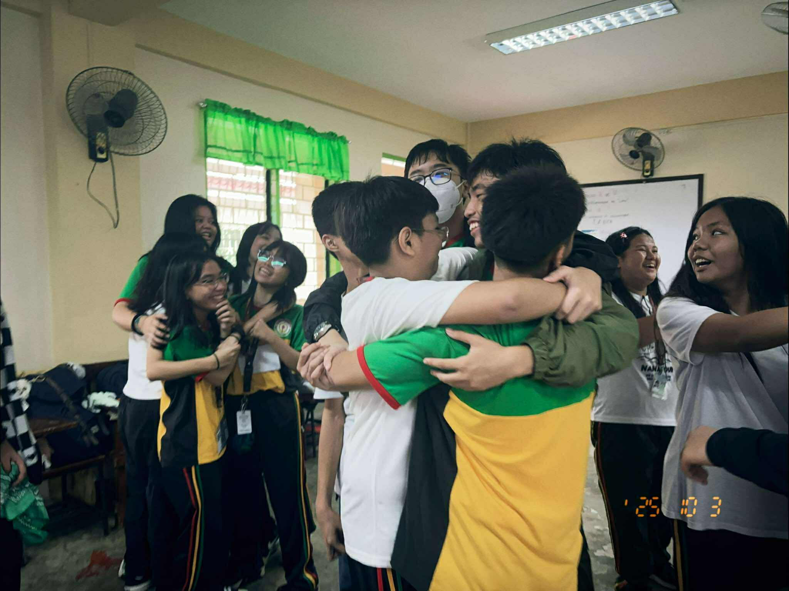
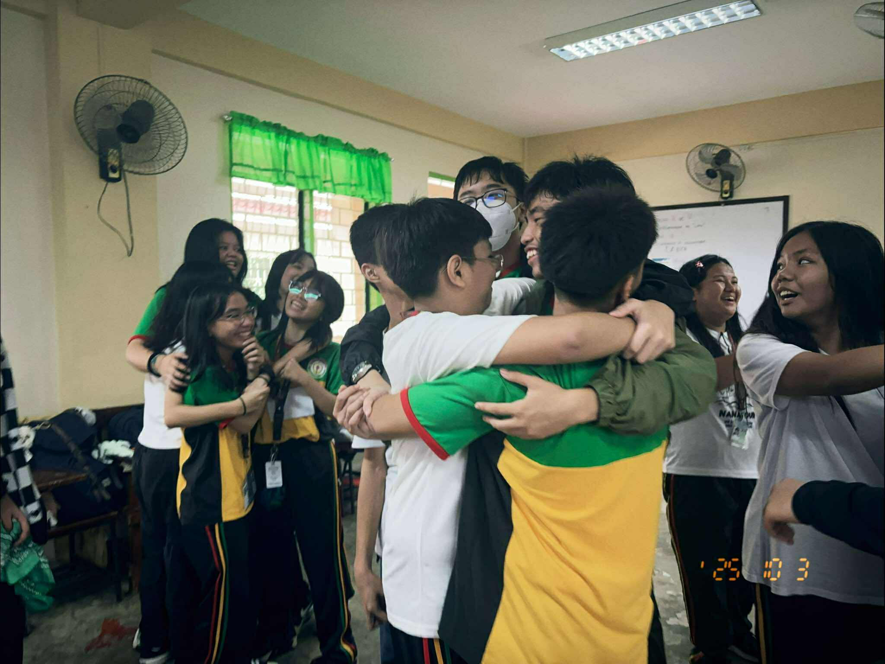

Event 1: Buwan ng Wika
Q1: What is the most important thing I learned from the event?
A: I learned that our language is more than just words — it’s a part of who we are. Even in modern times, Filipino will always be our heart language.
Q2: How can I apply what I learned in real-life situations?
A: I can use Filipino proudly in everyday life and encourage others to value our own language too.
Q3: Did I actively participate in the event? How?
A: Yes, I joined the performances, helped decorate, and supported my classmates with excitement and pride.
Q4: If I were to teach this topic to a classmate, how would I explain it?
A: I’d say Buwan ng Wika is about celebrating our culture and remembering that our language connects us as Filipinos.
Q5: Why is it important to have an event per subject?
A: It keeps learning alive and fun, helping us connect what we study to real life and culture.

Event 2: Intramurals
Q1: What is the most important thing I learned from the event?
A: I learned that teamwork and sportsmanship matter more than just winning. It’s about doing your best together.
Q2: How can I apply what I learned in real-life situations?
A: I can work better with others, stay positive even when things get tough, and be supportive like in the games.
Q3: Did I actively participate in the event? How?
A: Yes, I joined the cheering team, supported my classmates, and kept everyone’s energy high.
Q4: If I were to teach this topic to a classmate, how would I explain it?
A: I’d say Intramurals teaches you teamwork, discipline, and confidence — it’s not just about the sport, but the spirit.
Q5: Why is it important to have an event per subject?
A: It helps us discover our strengths, learn life lessons, and enjoy school beyond academics.

Event 3: Science Month
Q1: What is the most important thing I learned from the event?
A: I learned that science is not just facts — it’s discovery and curiosity about how things work in real life.
Q2: How can I apply what I learned in real-life situations?
A: I can use what I learned to ask questions, explore, and understand the world better.
Q3: Did I actively participate in the event? How?
A: Yes, I helped my group’s project and made sure our display looked interesting and creative.
Q4: If I were to teach this topic to a classmate, how would I explain it?
A: I’d say science helps us see how everything connects — from nature to technology — and that’s amazing.
Q5: Why is it important to have an event per subject?
A: It reminds us that learning can be fun and that science is everywhere — even in simple things we do daily.

Event 4: Araling Panlipunan Month
Q1: What is the most important thing I learned from the event?
A: I learned that our history isn’t just in books — it’s something we live and carry with us every day as Filipinos.
Q2: How can I apply what I learned in real-life situations?
A: I can be more respectful of our traditions, care more about current events, and value being Filipino.
Q3: Did I actively participate in the event? How?
A: Yes, I helped organize our group’s presentation and made sure the visuals and flow were well done.
Q4: If I were to teach this topic to a classmate, how would I explain it?
A: I’d say Araling Panlipunan Month helps us understand our identity, culture, and how we can help improve our nation.
Q5: Why is it important to have an event per subject?
A: It connects the lessons to real life and gives us a deeper appreciation for what we learn in class.

 

Event 5: Teacher’s Day
Q1: What is the most important thing I learned from the event?
A: I learned how much our teachers do for us and how they shape who we become. They truly deserve our appreciation.
Q2: How can I apply what I learned in real-life situations?
A: I can show respect and gratitude to teachers every day, not just on special occasions.
Q3: Did I actively participate in the event? How?
A: Yes, I helped prepare our class presentation and made personalized notes for our teachers.
Q4: If I were to teach this topic to a classmate, how would I explain it?
A: I’d say Teacher’s Day is about celebrating the people who guide and support us through every challenge.
Q5: Why is it important to have an event per subject?
A: It builds gratitude, respect, and connection — showing us that school is more than just lessons.

Event 6: Cluster Meet
Q1: What is the most important thing I learned from the event?
A: I learned that competition can be healthy when everyone shows teamwork and respect.
Q2: How can I apply what I learned in real-life situations?
A: I can push myself to do better, while still cheering for others and staying positive.
Q3: Did I actively participate in the event? How?
A: Yes, I joined in cheering and supported our team by helping with organizing and morale.
Q4: If I were to teach this topic to a classmate, how would I explain it?
A: I’d say Cluster Meet is about unity and pride — it’s showing what your school can do while having fun.
Q5: Why is it important to have an event per subject?
A: It gives every student a chance to shine, connect, and learn life lessons beyond academics.